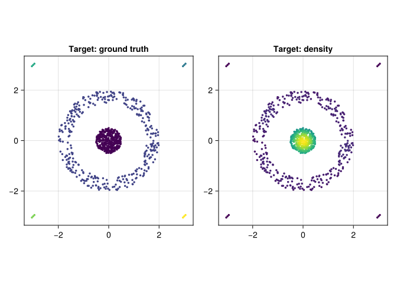
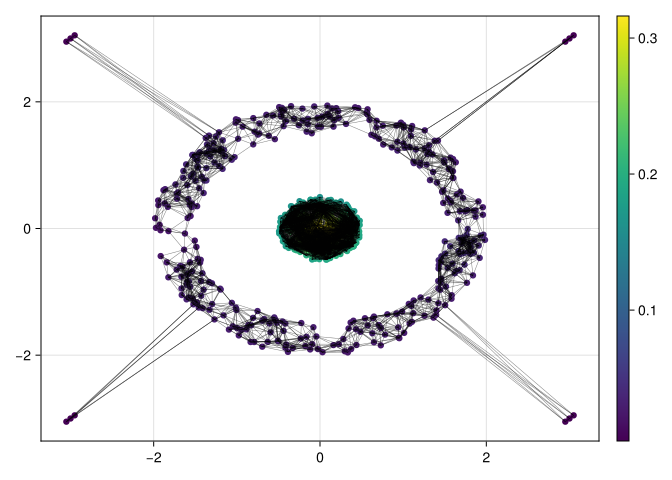
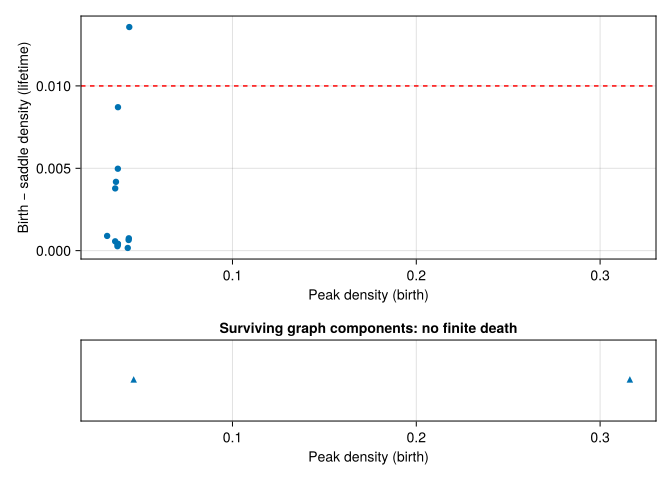
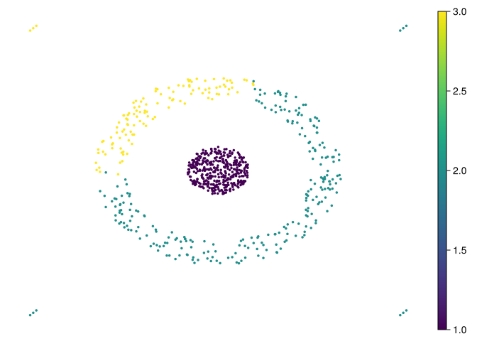
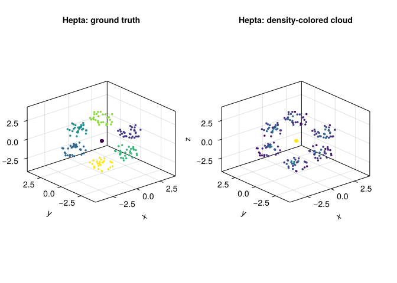
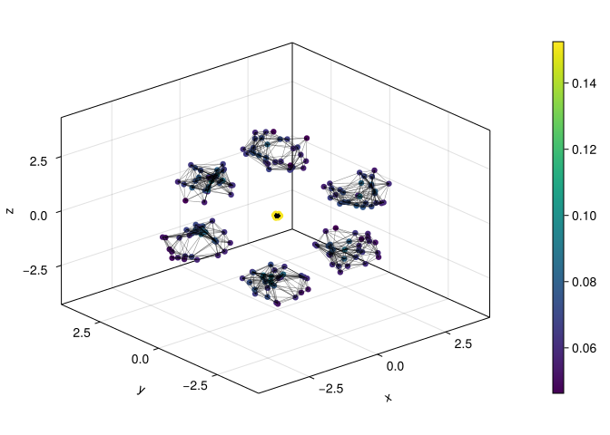
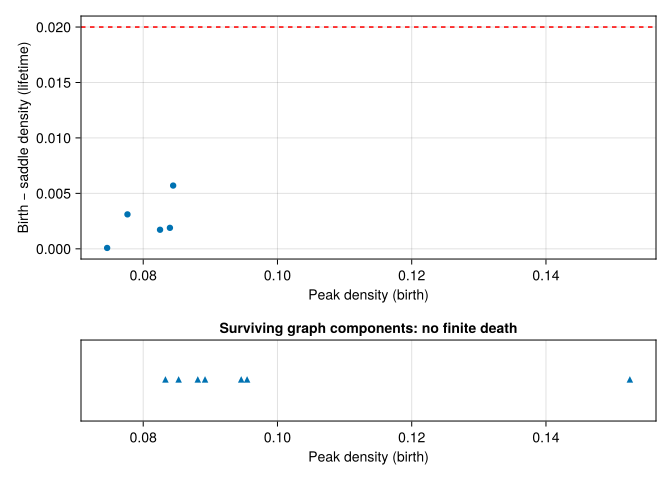
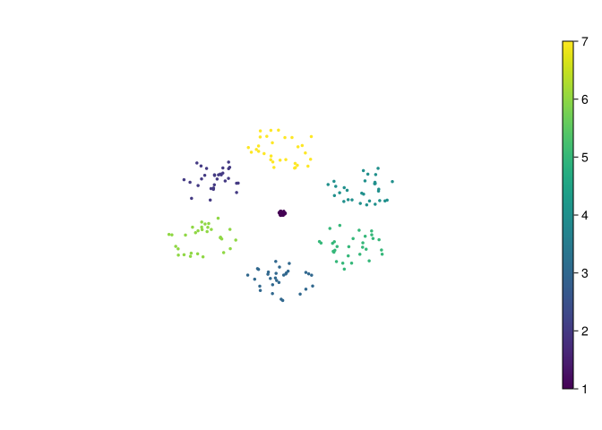

using CairoMakie
using DelimitedFiles
using MetricSpaces
using TDAplots
using ToMATo
using Clustering
using DataFrames
using Graphs14 Clustering with ToMATo
This chapter applies ToMATo to two synthetic datasets from the FCPS benchmark suite (Ultsch and Lötsch 2020), stored locally in this repository. One will work nicely; the other will make us earn our lunch. We will follow the same workflow:
- load a point cloud;
- estimate a density;
- build a proximity graph;
- inspect peak persistence;
- choose \(\tau\) and cluster.
14.1 Setup
function load_fcps(name)
raw = readdlm("clustering datasets/$name.csv", ',', Any)
X = EuclideanSpace(permutedims(Float64.(raw[2:end, 2:end])))
labels = Int.(raw[2:end, 1])
return X, labels
end
function peak_lifetime_plot(pairs; tau)
finite = [p for p in values(pairs) if isfinite(p[2])]
survivors = [p[1] for p in values(pairs) if !isfinite(p[2])]
fig = Figure(size = (800, 480))
ax = Axis(fig[1, 1], xlabel = "Peak density (birth)",
ylabel = "Birth − saddle density (lifetime)")
if !isempty(finite)
scatter!(ax, first.(finite), [p[1] - p[2] for p in finite])
end
hlines!(ax, [tau], color = :red, linestyle = :dash)
ax_surviving = Axis(fig[2, 1], xlabel = "Peak density (birth)",
title = "Surviving graph components: no finite death")
scatter!(ax_surviving, survivors, zeros(length(survivors)), marker = :utriangle)
hideydecorations!(ax_surviving)
lo, hi = extrema([p[1] for p in values(pairs)])
padding = max((hi - lo) * 0.05, 0.001)
xlims!(ax, lo - padding, hi + padding)
xlims!(ax_surviving, lo - padding, hi + padding)
rowsize!(fig.layout, 2, Relative(0.25))
fig
endpeak_lifetime_plot (generic function with 1 method)14.2 Target
Target has a 395-point ring, a 363-point central population, and four tiny three-point groups. Its six benchmark labels ask us to preserve the tiny groups too. Finding only a ring and a core would answer a different, coarser question.
target_X, target_labels = load_fcps("Target")
target_mat = as_matrix(target_X)
fig = Figure(size = (800, 400))
ax1 = Axis(fig[1, 1], title = "Target: ground truth", aspect = DataAspect())
scatter!(ax1, target_mat[1, :], target_mat[2, :], color = target_labels, markersize = 5)
target_ds = kde(target_X, bandwidth = 0.35)
ax2 = Axis(fig[1, 2], title = "Target: density", aspect = DataAspect())
scatter!(ax2, target_mat[1, :], target_mat[2, :], color = target_ds, markersize = 5)
fig┌ Warning: Found `resolution` in the theme when creating a `Scene`. The `resolution` keyword for `Scene`s and `Figure`s has been deprecated. Use `Figure(; size = ...` or `Scene(; size = ...)` instead, which better reflects that this is a unitless size and not a pixel resolution. The key could also come from `set_theme!` calls or related theming functions. └ @ Makie ~/.julia/packages/Makie/UjJJY/src/scenes.jl:238

The density has several peaks. Before calling them populations, remember that a density estimate can split a single labeled group into multiple modes. We retain the benchmark coordinates; bandwidth and graph radius are measured in those coordinate units.
target_g = proximity_graph(target_X, 0.35; min_k_ball = 5, max_k_ball = 12, k_nn = 5)
tomato_graph_plot(target_X, target_g, target_ds)┌ Warning: Found `resolution` in the theme when creating a `Scene`. The `resolution` keyword for `Scene`s and `Figure`s has been deprecated. Use `Figure(; size = ...` or `Scene(; size = ...)` instead, which better reflects that this is a unitless size and not a pixel resolution. The key could also come from `set_theme!` calls or related theming functions. └ @ Makie ~/.julia/packages/Makie/UjJJY/src/scenes.jl:238

This graph specifies the paths along which ToMATo can climb or join peaks. The five-neighbor fallback may add edges beyond radius 0.35; an undirected vertex can also receive edges from other vertices despite the per-point candidate cap.
(degree_range = extrema(degree(target_g)),
graph_components = length(connected_components(target_g)))(degree_range = (5, 188), graph_components = 2)_, target_births_and_deaths = tomato(target_X, target_g, target_ds, Inf)
peak_lifetime_plot(target_births_and_deaths, tau = 0.01)┌ Warning: Found `resolution` in the theme when creating a `Scene`. The `resolution` keyword for `Scene`s and `Figure`s has been deprecated. Use `Figure(; size = ...` or `Scene(; size = ...)` instead, which better reflects that this is a unitless size and not a pixel resolution. The key could also come from `set_theme!` calls or related theming functions. └ @ Makie ~/.julia/packages/Makie/UjJJY/src/scenes.jl:238

The horizontal axis shows birth density and the vertical axis shows lifetime above a saddle. Read the graph-component survivors separately: they have no observed finite death. Long lifetime is evidence about this landscape, not a promise of agreement with the supplied labels.
τ_target = 0.01
target_clusters, _ = tomato(
target_X,
target_g,
target_ds,
τ_target,
max_cluster_height = τ_target,
)
metricspace_plot(target_X, color = float.(target_clusters), markersize = 5)┌ Warning: Found `resolution` in the theme when creating a `Scene`. The `resolution` keyword for `Scene`s and `Figure`s has been deprecated. Use `Figure(; size = ...` or `Scene(; size = ...)` instead, which better reflects that this is a unitless size and not a pixel resolution. The key could also come from `set_theme!` calls or related theming functions. └ @ Makie ~/.julia/packages/Makie/UjJJY/src/scenes.jl:238

14.2.1 A result that needs explaining
The clustering has three groups. The ring is recovered, but the central population is split into 249 and 114 points. All four tiny groups are absorbed into central clusters. This is a failure to recover the six benchmark labels, even though the colored scatter plot can look quite persuasive.
Count the intersections instead of trusting the colors:
truth_ids = sort(unique(target_labels))
cluster_ids = sort(unique(target_clusters))
target_counts = [count((target_labels .== r) .& (target_clusters .== c))
for r in truth_ids, c in cluster_ids]
contingency = DataFrame(target_counts, Symbol.("cluster_" .* string.(cluster_ids)))
insertcols!(contingency, 1, :benchmark_label => truth_ids)
contingency6×4 DataFrame
| Row | benchmark_label | cluster_1 | cluster_2 | cluster_3 |
|---|---|---|---|---|
| Int64 | Int64 | Int64 | Int64 | |
| 1 | 1 | 395 | 0 | 0 |
| 2 | 2 | 0 | 249 | 114 |
| 3 | 3 | 0 | 3 | 0 |
| 4 | 4 | 0 | 0 | 3 |
| 5 | 5 | 0 | 3 | 0 |
| 6 | 6 | 0 | 3 | 0 |
The adjusted Rand index (ARI) compares whether pairs of points are together in both partitions, correcting for chance agreement. It equals 1 for identical partitions up to relabeling; values near zero indicate chance-level agreement, and negative values are possible. This comparison uses all points, including any label 0 as one predicted category.
target_ari = first(randindex(target_labels, target_clusters))0.7893027587257725The value is approximately 0.789. The contingency table shows which errors produce that number; the number alone would hide the swallowed tiny groups.
14.2.2 Change one ingredient at a time
Keep max_cluster_height = 0.01 fixed so that the following comparisons separate density estimation, graph construction, and persistence merging:
target_settings = [
(radius = 0.35, bandwidth = 0.35, tau = 0.01),
(radius = 0.35, bandwidth = 0.35, tau = 0.03),
(radius = 0.35, bandwidth = 0.50, tau = 0.01),
(radius = 0.55, bandwidth = 0.35, tau = 0.01),
(radius = 0.20, bandwidth = 0.35, tau = 0.01),
]
target_sensitivity = DataFrame()
for setting in target_settings
ds = kde(target_X, bandwidth = setting.bandwidth)
g = proximity_graph(target_X, setting.radius;
min_k_ball = 5, max_k_ball = 12, k_nn = 5)
labels, _ = tomato(target_X, g, ds, setting.tau; max_cluster_height = 0.01)
push!(target_sensitivity, merge(setting, (
positive_clusters = length(filter(>(0), unique(labels))),
low_density_points = count(==(0), labels),
adjusted_rand = first(randindex(target_labels, labels)),
)))
end
target_sensitivity5×6 DataFrame
| Row | radius | bandwidth | tau | positive_clusters | low_density_points | adjusted_rand |
|---|---|---|---|---|---|---|
| Float64 | Float64 | Float64 | Int64 | Int64 | Float64 | |
| 1 | 0.35 | 0.35 | 0.01 | 3 | 0 | 0.789303 |
| 2 | 0.35 | 0.35 | 0.03 | 2 | 0 | 0.970209 |
| 3 | 0.35 | 0.5 | 0.01 | 4 | 0 | 0.699189 |
| 4 | 0.55 | 0.35 | 0.01 | 3 | 0 | 0.787564 |
| 5 | 0.2 | 0.35 | 0.01 | 4 | 0 | 0.700222 |
Increasing \(\tau\) to 0.03 produces two clusters and improves ARI to about 0.970 by joining the central pieces. It still loses all four tiny groups. A larger bandwidth of 0.50 produces four clusters and ARI about 0.699; a larger radius of 0.55 leaves three clusters and ARI about 0.788. None of these settings recovers the six labels. Smoothing changes the landscape, and changing the graph changes its merge paths; neither effect can be read from \(\tau\) alone.
These labels are available because this is a benchmark. Selecting settings by their ARI on this dataset is an exploratory comparison, not evidence of performance on unseen data. In an unlabeled application, inspect cluster membership, domain meaning, and sensitivity to resampling as well.
14.3 Hepta
Hepta is a three-dimensional dataset with well-separated dense regions. It is a useful contrast with Target: the geometry is simpler, but the data now lives in three dimensions.
hepta_X, hepta_labels = load_fcps("Hepta")
hepta_mat = as_matrix(hepta_X)
fig = Figure(size = (800, 400))
ax1 = Axis3(fig[1, 1], title = "Hepta: ground truth")
scatter!(ax1, hepta_mat[1, :], hepta_mat[2, :], hepta_mat[3, :], color = hepta_labels, markersize = 5)
hepta_ds = kde(hepta_X, bandwidth = 0.8)
ax2 = Axis3(fig[1, 2], title = "Hepta: density-colored cloud")
scatter!(ax2, hepta_mat[1, :], hepta_mat[2, :], hepta_mat[3, :], color = hepta_ds, markersize = 5)
fig┌ Warning: Found `resolution` in the theme when creating a `Scene`. The `resolution` keyword for `Scene`s and `Figure`s has been deprecated. Use `Figure(; size = ...` or `Scene(; size = ...)` instead, which better reflects that this is a unitless size and not a pixel resolution. The key could also come from `set_theme!` calls or related theming functions. └ @ Makie ~/.julia/packages/Makie/UjJJY/src/scenes.jl:238

Here the density picture is more straightforward: several compact high-density regions stand apart clearly.
hepta_g = proximity_graph(hepta_X, 1.0; min_k_ball = 4, max_k_ball = 12, k_nn = 4)
tomato_graph_plot(hepta_X, hepta_g, hepta_ds)┌ Warning: Found `resolution` in the theme when creating a `Scene`. The `resolution` keyword for `Scene`s and `Figure`s has been deprecated. Use `Figure(; size = ...` or `Scene(; size = ...)` instead, which better reflects that this is a unitless size and not a pixel resolution. The key could also come from `set_theme!` calls or related theming functions. └ @ Makie ~/.julia/packages/Makie/UjJJY/src/scenes.jl:238

_, hepta_births_and_deaths = tomato(hepta_X, hepta_g, hepta_ds, Inf)
peak_lifetime_plot(hepta_births_and_deaths, tau = 0.02)┌ Warning: Found `resolution` in the theme when creating a `Scene`. The `resolution` keyword for `Scene`s and `Figure`s has been deprecated. Use `Figure(; size = ...` or `Scene(; size = ...)` instead, which better reflects that this is a unitless size and not a pixel resolution. The key could also come from `set_theme!` calls or related theming functions. └ @ Makie ~/.julia/packages/Makie/UjJJY/src/scenes.jl:238

τ_hepta = 0.02
hepta_clusters, _ = tomato(
hepta_X,
hepta_g,
hepta_ds,
τ_hepta,
max_cluster_height = τ_hepta,
)
metricspace_plot(hepta_X, color = float.(hepta_clusters), markersize = 5)┌ Warning: Found `resolution` in the theme when creating a `Scene`. The `resolution` keyword for `Scene`s and `Figure`s has been deprecated. Use `Figure(; size = ...` or `Scene(; size = ...)` instead, which better reflects that this is a unitless size and not a pixel resolution. The key could also come from `set_theme!` calls or related theming functions. └ @ Makie ~/.julia/packages/Makie/UjJJY/src/scenes.jl:238

(positive_clusters = length(filter(>(0), unique(hepta_clusters))),
adjusted_rand = first(randindex(hepta_labels, hepta_clusters)))(positive_clusters = 7, adjusted_rand = 1.0)Here we recover seven positive clusters with ARI 1.0: the memberships match the benchmark labels exactly after relabeling. Hepta’s compact separated groups suit the chosen geometry, density, and graph. It is a useful successful check, alongside the less cooperative Target example.
14.4 Remarks
The same recipe appears in both examples, but the parameters change:
- the density bandwidth depends on the scale of the data;
- the proximity radius controls how local the neighborhood graph is;
- the persistence threshold \(\tau\) decides how aggressively ToMATo merges peaks.
That is the practical side of ToMATo: the algorithm is simple, but the scale parameters still need to match the geometry of the dataset.
The graph construction also caps dense radius neighborhoods by observation ID. The benchmark order is fixed here; a permutation sensitivity check is useful before treating these clusters as a property of geometry alone.
14.5 Summary
These two examples illustrate the same practical lesson:
- first inspect the geometry of the data;
- then inspect the density and the peak persistence;
- only then settle on a final threshold \(\tau\).
Record the absolute peak-height threshold separately from \(\tau\), too. Label 0 collects low peaks after merging; it is not a new population. The useful output of the workflow includes the failed memberships and the sensitivity table, as well as the final clustering.
14.6 Try it yourself
- Why is a two-cluster Target result with ARI 0.970 still not a recovery of the benchmark partition?
NoteWorked answer
The four three-point benchmark groups are absorbed. Most pairs involve points in the two large groups, so recovering those dominates the pair-based score. The six-row contingency table makes this limitation visible.
- Suppose the proximity graph splits one true population into two disconnected components. Can increasing \(\tau\) join them?
NoteWorked answer
No. Persistence merging follows paths in the graph, and none joins the components. Both can have a survivor without finite death. Changing graph construction is needed; assigning both label 0 would only hide the disconnection in a shared category.
- Why keep
max_cluster_heightfixed when varying \(\tau\) in the sensitivity table?
NoteWorked answer
Otherwise two rules change at once: merging by lifetime and relabeling by absolute height. A changing cluster count would not tell us which rule caused it. Bandwidth changes density heights too, so its comparison still needs both thresholds recorded.